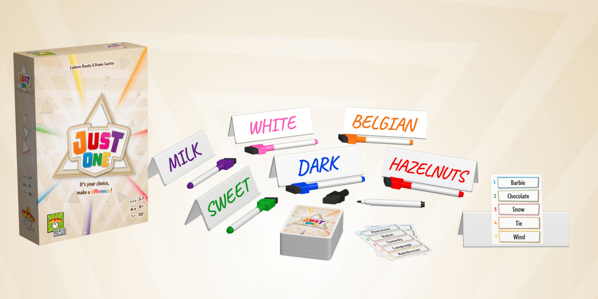
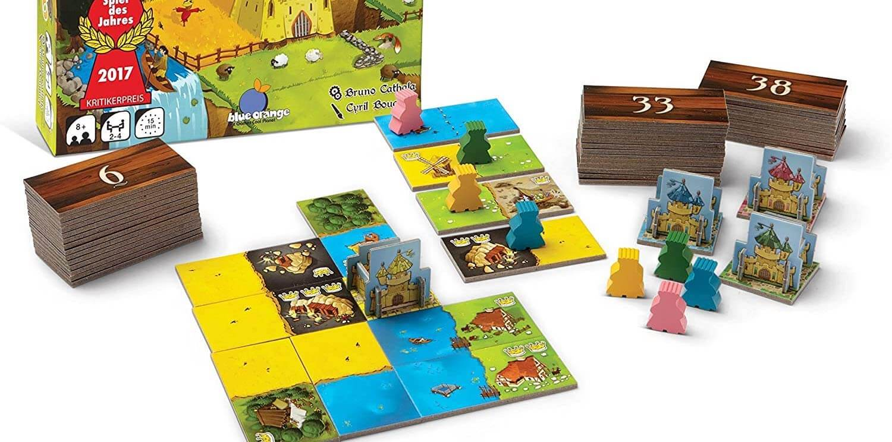

7 of The Best Board Games for Families


It's a ton of fun to play board games with the family! Every family is different though, so finding the perfect game that everyone will enjoy can be tricky. These games are a great place to start, as they are relatively quick to play, and they are easy to learn and teach.
We've played many different games with our families over the years, and these picks consistently make for a good time.
1. Just One



Just One is a simple cooperative word game, and it was an immediate success with my family. We were playing within minutes, laughing and cheering, and even my grandparents played with us, which was so much fun. It can be played with up to 7 people too!
In this game, one player (the guesser) tries to guess a secret word, and everyone else writes just one word as a clue, in private. Then, everyone shows their clues to each other, except the guesser, and any matching words are erased! The guesser has just one guess at what the secret word is based on the remaining clues.
This game is easy to pick up, but choosing a good clue can be challenging. Go simple and risk risk matching up with someone else, or go obscure and risk confusing the guesser? Just One is great for new gamers and veterans alike, and the cooperative aspect and minimal downtime is great for families!
Buy Just One on Amazon
2. Drop It
If your family likes Connect Four, then Drop It is for you! Players take turns dropping colored pieces into a slotted stand, hoping they land in a favorable way to get points. But of course, things often don't go as planned!
The higher your piece lands, the more points you get. However, if your piece touches another piece of the same shape or color, you get no points from that piece! You might tell yourself "there's no way my circle will bounce over there to touch that other circle," only for that exact thing to happen seconds later.
This game is silly and light-hearted, and it's perfect for kids as well as adults. Drop It always brings a smile to everyone's face (and yelling and laughter), and it takes only a few minutes to get started. I always bring this game with me now when visiting home!
Buy Drop It on Amazon
3. Kingdomino
Kingdomino is a modern take on Dominoes - you'll be constructing your kingdom with tiles that have two types of terrain on them. Each tile you add to your kingdom must connect to matching terrain areas, and the larger the area, the more points you score.
While you each build your own kingdom, you'll be interacting with your family when choosing tiles. Tiles are laid out at the start of each round, and if you take the highest quality tile, you'll be choosing last in the next round. Better tiles have more crowns or rarer terrain, and they will be worth more points at the end of the game.
This level of player interaction provides good competition and strategy, without being as cutthroat as some other tile-laying games. This is a quick game with simple rules, and there is minimal downtime so everyone will stay engaged.
Buy Kingdomino on Amazon
4. Ticket to Ride

Ticket to Ride is a great successor to older titles your family may have played, like Monopoly or Scrabble. This game has a nice level of strategy with simple turns, and the train theme is fun for all. After playing a few times, you can finish each game pretty quickly - they don't drag on like Monopoly.
The aim of this game is to connect cities in the US with your train pieces, and you'll do this by laying down colored cards that correspond to some tracks on the map. Your route cards will tell you which cities to connect, as well as how many points you'll get for doing so. Multiple players will be eyeing the same track sections, so it's a race to get the cards required to play in a specific spot without getting blocked!
Ticket to Ride is easy to set up, teach, and start playing. If you are trying to introduce your family to more complex games, Ticket to Ride is a great place to start!
Buy Ticket to Ride on Amazon
5. Ice Cool
Ice Cool is a fun dexterity game where you flick penguins through the rooms and halls of a frozen tabletop high school. Dexterity games don't have complicated rules and mechanics - it's all about who can physically control and maneuver their penguin the best!
In each round, one player will be the Hall Monitor trying to catch the other penguins, the "Runners." If you're the Hall Monitor, you simply need to flick your penguin into another to "catch" them - whether it's across rooms, through doorways, or even over walls! If you're a Runner, you'll try to flick your penguin through doorways, collecting fish (and points) along the way, and of course avoiding the Hall Monitor.
If your family has enjoyed Jenga or Crokinole in the past, this is a really fun game to try next. It's easy to pick up and start playing, but getting good at controlling your penguin is definitely not always easy. Even if your family prefers strategy games, Ice Cool has very satisfying moments that any gamer can appreciate.
Buy Ice Cool on Amazon
6. Codenames

Codenames is a great word-guessing game for larger groups (including families), and it's no surprise that it has sold over 1 million copies. and family is no exception. Codenames has simple rules, but is definitely more challenging than some of the previous games on this list.
Your family will split into two teams, each led by a Spymaster. Word cards are laid out on the table - some are words that your team must identify and some are for the other team, but only the Spymasters know which are which. As Spymaster, you might give the clue "ground, 2," meaning that 2 of the words are related to "ground." It's then up to your team to figure out which they are. Be careful of giving misleading clues though - your team can guess words for the other team!
This is a solid lightweight game that gets everybody's brain working. The team play also lets your family work together while still enjoying some friendly competition, and the game will only get better each time you play.
Buy Codenames on Amazon
7. Azul

Azul is a wildly popular game and for good reason - excellent game design, beautiful components, and highly replayable. This game is also a good introduction to modern board games, as many of the mechanics and scoring systems are found in other newer games.
On your turn, you take all tiles of the same color from a factory tray and push the rest to the center of the table. Tiles can also be taken from the center, which will quickly become more and more valuable. You then lay down your chosen tiles to construct a beautiful mosaic for your palace. Points are awarded based on how good your pattern is, dictated by cards that show tile layouts. Of course, it will be tricky to satisfy all objectives perfectly, so you need to make the best of the tiles you collect.
The turns in this game are quite simple for how much thinking you can put into your tile placement. Azul is easy to get into but has enough depth for any group of players. If your family ends up loving Azul, then it's a game you can keep playing over and over!
Buy Azul on Amazon
Did we miss any good recommendations? Have other feedback for us? Send us an email at support@spiralburst.com and let us know!